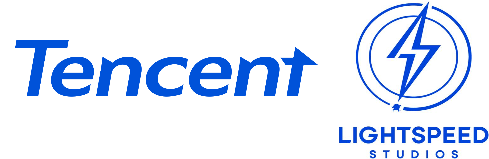
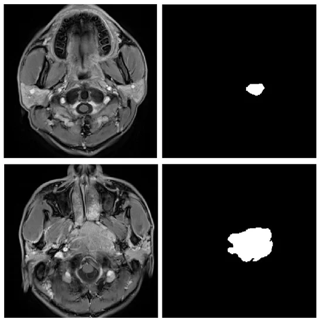

Biography
I am a first-year PhD student at Rutgers University - New Brunswick. Fortunate to be advised by Prof. Chengzhi Mao, I am dedicated to bringing 3D Vision to the next stage, empowering it with spatial intelligence through Visual Language Models.
I have been working on Generative AI for 3D Vision, involving generation, inverse rendering, and geometric reconstruction problems. I had wonderful experiences during my internships at LightSpeed Studio Tencent, Microsoft Research Asia, and SmartMore. It has been my honor to collaborate with talented researchers at these institutions, including Yuhan Wang , Jinnan Chen, Jinglu Wang, Xiao Li , Shuai Yang and Jiangbo Lu.
Previously, I received my M.Phil. degree in Artificial Intelligence from HKUST, under the supervision of Prof. Yingcong Chen and Prof. Dan Xu and obtained my B.S. degree in Mathematics from SYSU. Currently, I am working on Parallel and Spatial Reasoning of (V)LLMs.🔥News
- • 2025.3: I start my research intern at Tencent LIGHTSPEED STUDIOS, working on Large 3D Models. Collabrations are highly welcomed.
- • 2024.12: I am looking for PhD position in 2025. Please contact me if you are interested.
Experience

Internship: Mar 2025 - Current

Stars of Tomorrow Internship: Jun 2024 - Feb 2025
Internship: Jun 2022 - May 2024
Sun Yat-sen University
Internship: Mar 2021 - Nov 2021
Publications [Google Scholar]
*: Equal Contribution
StreamGS: Online Generalizable Gaussian Splatting Reconstruction for Unposed Image Streams
International Conference on Computer Vision (ICCV). 2025

GNeRP: Gaussian guided
Neural Reconstruction of Reflective Objects with Noisy Polarization Priors
International Conference on Learning Representations (ICLR), 2024.

Honors & Awards
| PhD Scholarship in Computer Science, Rutgers University | 2025 |
| PhD Scholarship in Computer Science, Dartmouth College | 2025 |
| Stars of Tomorrow (Award of Excellent Intern), Microsoft Research Asia | 2025 |
| PhD Scholarship in ECE, Mila - Quebec AI Institute & McGill University | 2024 |
| Postgraduate Scholarship, HKUST, GZ | 2022 |
| Undergraduate Excellent Scholarship, SYSU | 2019 |
Professional Services
Conference Reviewer:
| NeurIPS | 25' |
| ICLR | 25', 26' |
| CVPR | 25' |
| AISTATS | 25', 26' |
| ICML | 25' |
Research Interests
| Generative 3D Vision |
| Large Language Models for Vision |
© Yang Li| Last updated: Nov. 2025